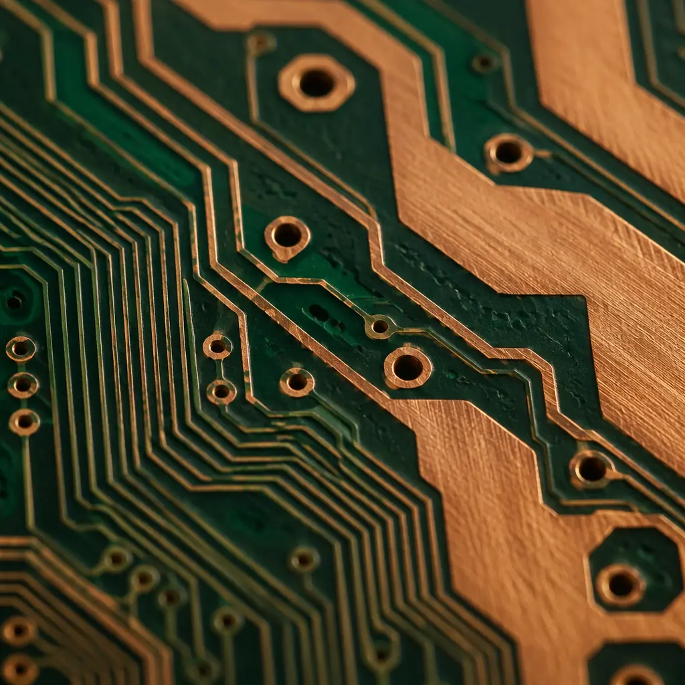
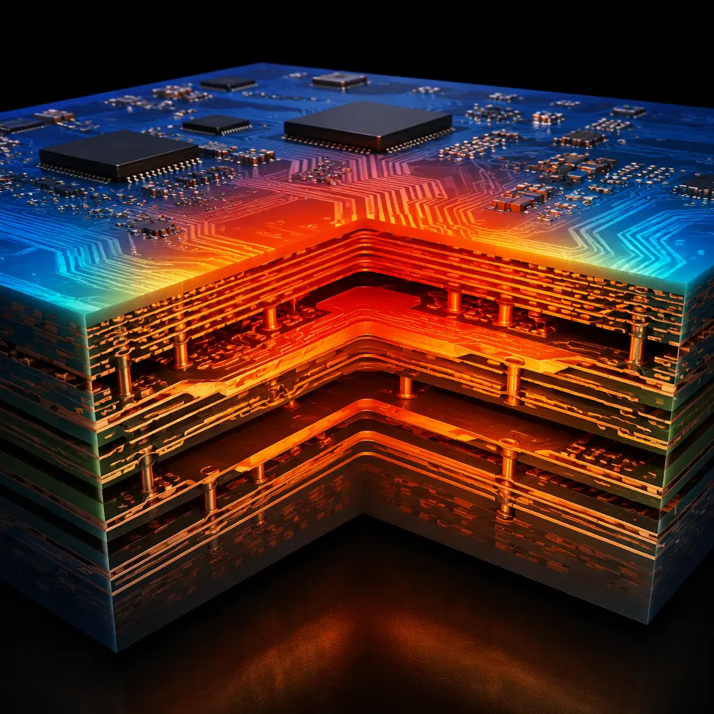

Every PCB designer has stared at a trace width calculator at some point, wondering whether the result is conservative enough for a product that needs to survive ten years in the field. The answer depends heavily on which standard you follow. The industry transitioned from IPC-2221 to IPC-2152 in 2009, yet many online calculators still use the older, more conservative charts — and the difference between the two can mean the difference between an adequately sized trace and one that runs 30°C hotter than expected.
At Huaxing PCBA, we manufacture PCBs with copper weights from 0.5 oz to 6 oz, supporting trace widths down to 3 mil on our high-density lines and up to 500 mil on heavy-copper power boards. Our engineering team validates trace current capacity during DFM review for every order, and this article shares the design rules we use daily.

IPC-2221 vs IPC-2152: Why the Charts Changed
The IPC-2221 generic standard on printed board design included a set of charts relating trace width, copper thickness, current, and temperature rise. Those charts — published in 1998 and still appearing in countless online calculators — were derived from a 1956 NBS (National Bureau of Standards) study that tested a single set of test boards in still air. The data was conservative for external traces because it assumed no heat sinking from adjacent copper planes, and it lumped internal and external layers together in a way that didn't reflect real multi-layer PCB thermal behavior.
IPC-2152 (2009), titled "Standard for Determining Current-Carrying Capacity in Printed Board Design," replaced those charts with data from a much broader study that tested 72 different board configurations — varying copper weight, board thickness, layer count, and the presence of parallel planes. The key finding: traces on boards with internal copper planes can carry significantly more current than IPC-2221 predicted, because the planes act as heat spreaders and reduce the trace temperature rise by 30–50%.
Design Reality: If your online calculator is based on IPC-2221 (most free tools are), it's giving you trace widths that are conservative by a factor of 1.3–1.5× for external traces on multi-layer boards with internal planes. That's not necessarily wrong — conservative is safe — but it can force unnecessarily wide traces that consume routing space in dense designs.
Trace Current Capacity by Copper Weight: Reference Data
The tables below give practical reference values for external traces on FR-4 with a 10°C temperature rise, derived from IPC-2152 data. Multiply widths by approximately 1.3× for internal layers (which have poorer heat dissipation). For a 20°C rise, reduce width by roughly 30%; for a 5°C rise, increase width by roughly 50%.
| External Trace Width (mils) for Given Current at 10°C Rise — IPC-2152 | ||||
|---|---|---|---|---|
| Current (A) | 1 oz (35 μm) | 2 oz (70 μm) | 3 oz (105 μm) | 4 oz (140 μm) |
| 1 A | 10 mil | 5 mil | 4 mil | 3 mil |
| 3 A | 40 mil | 20 mil | 15 mil | 12 mil |
| 5 A | 80 mil | 40 mil | 30 mil | 25 mil |
| 10 A | 200 mil | 100 mil | 75 mil | 60 mil |
| 15 A | 350 mil | 175 mil | 130 mil | 100 mil |
| 20 A | 520 mil | 260 mil | 190 mil | 150 mil |
| 30 A | 900 mil | 450 mil | 330 mil | 260 mil |
| 50 A | — | 920 mil | 670 mil | 520 mil |
For designs exceeding 30 A, individual traces become impractical — at that point, consider using heavy copper PCB technology (4–6 oz copper) or bus bar integration. Our heavy copper manufacturing line supports up to 6 oz copper weights with trace width capability down to 8 mil, suitable for power distribution in EV battery management, industrial motor drives, and server power supplies.
Five Design Rules for High-Current PCB Traces
Derate for Ambient Temperature: The 25°C Baseline Is Rarely Reality
IPC-2152 charts assume 25°C ambient. If your PCB operates inside an enclosure at 60°C (common for automotive under-hood and industrial control), your available temperature rise budget is the difference between the maximum operating temperature of FR-4 (typically 130°C for standard Tg, 170°C for high-Tg) and your ambient. At 60°C ambient, a trace sized for 10°C rise at 25°C will actually see roughly 15–18°C rise because copper resistivity increases with temperature (temperature coefficient of copper: 0.393% per °C). Always check your actual operating ambient, not just the lab bench.
Internal Layers Need 30–50% More Width Than External
Internal layer traces are surrounded by FR-4 dielectric, which has thermal conductivity roughly 200× lower than copper (0.3 W/m·K vs 385 W/m·K). Heat dissipation is dramatically worse. The IPC-2152 derating factor for internal layers is approximately 0.5–0.7 relative to external — meaning you need 1.4–2.0× the trace width on an internal layer to carry the same current at the same temperature rise. For high-current internal planes, see our PCB stackup design guide for strategies to place power layers adjacent to ground planes for heat spreading.
Via Current Capacity: Often the Real Bottleneck
A trace can be the right width, but if it necks down through a via that's too small, the via becomes the fuse. A standard 0.3 mm (12 mil) drilled via with 1 oz copper plating can carry approximately 1.2 A at 10°C rise. For 5 A, you need roughly 4 such vias in parallel, or a single 0.6 mm via. For designs above 10 A per net, consider using multiple vias in a grid pattern, or switch to via-in-pad or filled via technology. The rule of thumb: via current capacity scales with the circumference of the hole, not the area — because current flows through the plated barrel wall, not through the hole volume.
Voltage Drop Matters Before You Reach the Thermal Limit
For power distribution traces above 12 inches in length, voltage drop often becomes the limiting factor before thermal rise does. A 100 mil wide, 1 oz copper trace carrying 5 A over 15 inches will drop approximately 0.35 V — enough to push a 3.3V rail below tolerance on the far end of the board. For signal integrity and power integrity, always calculate IR drop alongside thermal rise. Use wider traces or copper pours for long power runs, and place voltage regulators close to their loads.
Copper Planes Are Free Heat Sinks — Use Them
IPC-2152 explicitly accounts for the presence of copper planes, which is why its current ratings are higher than IPC-2221. If your design has internal ground or power planes, traces on adjacent layers benefit from heat spreading through the plane. The effect is strongest when the trace is separated from the plane by a thin dielectric (≤4 mil prepreg). At 4 mil separation, a trace can carry roughly 40% more current than the same trace on a board without internal planes. This is one of the most overlooked thermal management levers in PCB design — and it costs nothing to use.

Special Cases: Pulsed Current and Parallel Traces
The steady-state current tables above assume continuous DC current. For pulsed or intermittent loads, the effective current-carrying capacity is higher because the trace has time to cool between pulses.
Pulsed Current: RMS Is the Safe Baseline
For pulse duty cycles below 50% and pulse widths under 100 ms, the trace thermal mass smooths out temperature peaks, and the RMS current provides a conservative estimate for sizing. For example, a trace carrying 20 A pulses at 25% duty cycle has an RMS current of 10 A — size for 10 A continuous and you'll have margin. For very short pulses (microsecond range), the peak current can far exceed the continuous rating because the copper doesn't have time to heat significantly; the limiting factor becomes electromigration in the copper grain structure, not thermal rise.
Parallel Traces: Mutual Heating Reduces Capacity
When multiple high-current traces run parallel and close together (≤2× trace width separation), they mutually heat each other. A group of three 100 mil traces carrying 5 A each with 100 mil spacing will run approximately 5–8°C hotter than a single isolated trace carrying the same current. The solution: increase spacing to ≥3× trace width, or derate individual trace current by 15–20% for closely spaced parallel runs.
Design Tip: When in doubt, over-size by 20%. The cost of a wider trace on an outer layer is essentially zero — it's just copper that was going to be etched away anyway. The cost of a burnt trace discovered during reliability testing is a respin, and the cost of a burnt trace discovered in the field is a recall.
Practical Trace Width Quick Reference
For quick design reviews, use this simplified table. It assumes external layer, 1 oz copper, 10°C temperature rise, 25°C ambient, multi-layer board with internal planes (IPC-2152 with plane factor). These values are safe for prototype and low-to-medium volume production. For high-volume design, run a full IPC-2152 calculation with your specific stackup parameters.
| Current | External Trace (1 oz) | Internal Trace (1 oz) | External (2 oz) |
|---|---|---|---|
| 0.5 A | 5 mil | 7 mil | 3 mil |
| 1 A | 10 mil | 14 mil | 5 mil |
| 2 A | 25 mil | 35 mil | 13 mil |
| 3 A | 40 mil | 55 mil | 20 mil |
| 5 A | 80 mil | 110 mil | 40 mil |
| 8 A | 150 mil | 210 mil | 75 mil |
| 10 A | 200 mil | 280 mil | 100 mil |
| 15 A | 350 mil | — | 175 mil |
| 20 A | 520 mil | — | 260 mil |
For high-voltage PCB designs, creepage and clearance requirements often dictate wider spacing than current capacity alone — always check your safety standard (IEC 60950, IEC 62368) before finalizing trace widths on high-voltage nets.
Summary: Calculate, Don't Guess
Trace width is one of the few PCB design decisions where the cost of being wrong ranges from minor (a slightly warmer board that still passes testing) to catastrophic (a carbonized trace that takes out the whole power rail). The IPC-2152 standard gives you the data to size traces correctly, but it's not a substitute for understanding your actual operating conditions: ambient temperature, airflow, adjacent heat sources, and duty cycle all affect real-world current capacity.
The safest approach is to build margin into your design from the start — use the IPC-2152 charts with your actual copper weight and layer stackup, add 20% width margin for parallel trace heating and manufacturing variation, and verify with a thermal camera on first-article boards at full load. At Huaxing PCBA, our DFM review includes trace width validation against your specified current requirements — we'll flag undersized traces before they become field failures. Read our thermal management guide for board-level heat dissipation strategies, or check our copper weight selection guide if you're unsure which copper thickness to specify.